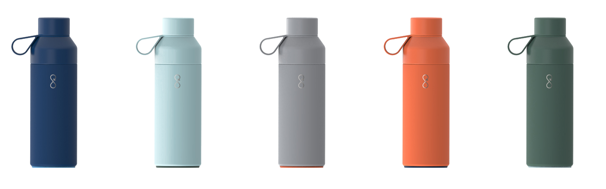

Plastic is poulting our oceans at an astounding rate. The Ocean Bottle is here to help stop it.
Plastic is poulting our oceans at an astounding rate. The Ocean Bottle is here to help stop it.
Plastic is poulting our oceans at an astounding rate. The Ocean Bottle is here to help stop it.
Plastic is poulting our oceans at an astounding rate. The Ocean Bottle is here to help stop it.
Plastic is poulting our oceans at an astounding rate. The Ocean Bottle is here to help stop it.
Plastic is poulting our oceans at an astounding rate. The Ocean Bottle is here to help stop it.
Ocean Plastic is growing by 22 million kgs each day. Our job isn’t to slow this down. It’s to stop it. The majority of ocean plastic comes from just a few sources. If we can stop plastic pollution there, we can turn the tap off ocean plastic.
But how do you do that?
We’re not about coming in, cleaning up a beach, and calling it a day. That might keep a beach clean, for, well, a day. Great, not good enough. We’re on a mission to create lasting change.
In short, the problem is only ocean plastic. That's a symptom
Over 80% of ocean plastic comes from regions that lack recycling infrastructure and the waterways that flow through them.
Rivers are often used to dispose of plastic waste because there’s no better alternative.
Unfortunately, this means that plastic ends up in our oceans.
Get your bottleWe’ve teamed up with The Plastic Bank to build a global team of plastic collectors. They are a multi-award winning organisation who use IBM blockchain to track plastic collection, which means we can see who has collected this plastic and also where & when.
Together, we’re enabling people living in poverty all over the world to make a fair living from collecting plastic – providing them with an income that is up to 3x their normal salary.
This increase in value can be life changing. It means you can shift from living beneath the poverty line to being able to put food on the table, send your kids to school, afford medical insurance, open your first bank account and even finance solar energy.
Each bottle is activated with an NFC smart chip. We are developing digitial features with our partners, which will
enable you bottle to donate more plastic collection when refilling at partner locations.
 Get your bottleStay in touch with all things Oceanbottle.